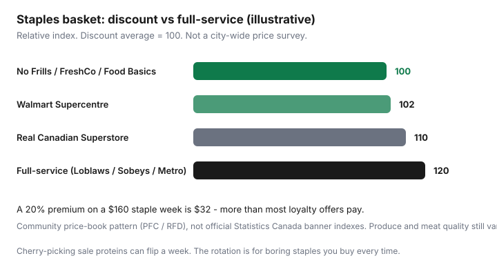

Food & Groceries · Canada
No Frills vs FreshCo vs Food Basics vs Walmart: build a Canadian discount rotation
Convenience shopping at full-service banners quietly adds a double-digit premium versus discounters on identical staples. Canadian personal-finance threads often put that gap around 10–15% or more. That is a community pattern, not a Statistics Canada banner index — so treat it as a hypothesis you prove with a 12-item list, not as a law.
This guide builds a discount rotation across Canada’s three grocery empires’ cheap banners, plus Walmart, with loyalty overlays. It is not U.S. Aldi/Lidl advice. Maxi, Super C, and Save-On-Foods matter as soon as you leave Ontario’s No Frills/FreshCo/Food Basics triangle.
Disclosure: Loyalty co-branded cards, grocery gift cards, and cashback portals are offer types. Saving Optimizer may earn a commission if we later add partner links. We do not currently claim retailer or issuer partnerships.
Key takeaways
- “Cheapest store” is either a full-basket average or a cherry-pick. Decide which game you are playing.
- Pair No Frills with PC Optimum, FreshCo with Scene+, Food Basics with Moi offers, Walmart with a card that actually codes there (not Amex).
- Produce and meat quality are store-level, not banner theology. Walk away from a bad case.
- One weekly discounter plus a monthly bulk run beats three Saturday parking lots for most families.
- Keep Loblaws/Sobeys/Metro for exceptions, not milk.
What “cheapest” means: basket vs cherry-pick
A basket shopper wants the lowest total on a fixed list. Discount banners usually win. A cherry-pick shopper wants loss-leader chicken at store A and cheap oats at store B. Cherry-picking wins only if you count fuel, time, and impulse at the second store.
Price matching (where it exists) is cherry-picking without the second lot. That is why the Flipp system sits next to this rotation.

Banner map by province/city availability
| Banner | Parent | Loyalty | Strongest regions (typical) |
|---|---|---|---|
| No Frills | Loblaw | PC Optimum | Ontario, Prairies, some B.C. / Atlantic |
| Real Canadian Superstore | Loblaw | PC Optimum | West + Ontario; bigger box, mixed prices |
| Maxi | Loblaw | PC Optimum | Quebec discounter |
| FreshCo / Chalo! | Empire (Sobeys) | Scene+ | Ontario + West (not everywhere) |
| Food Basics | Metro | Moi (mostly offers) | Ontario |
| Super C | Metro | Moi (limited) | Quebec |
| Walmart Supercentre | Walmart | No grocery coalition | National; no competitor flyer match; no Amex |
| Save-On-Foods | Pattison | More Rewards | B.C., Alberta, and other West |
Atlantic shoppers often live in Sobeys / Foodland / Superstore / Walmart space more than Food Basics. Northern pricing is its own problem; this rotation assumes you have at least one discounter within a reasonable drive.
Loyalty overlays (PC, Scene+, Moi)
Do not pick a banner for a 1% offer. Pick the banner, then load the matching program. Details: PC Optimum vs Scene+ vs Moi. Walmart has no coalition points; your “loyalty” there is unit price plus a Visa/Mastercard that codes the purchase (often not as grocery — test a statement).
Produce and meat quality expectations
Discounters can be excellent on Tuesday and tired on Sunday night. If the berries are dust, skip them. Frozen vegetables are a quality strategy, not a consolation prize. Meat: buy the sale cut you will freeze; do not assume Walmart chicken is always cheaper per kilogram than No Frills thighs on flyer. Weigh it. Check the unit price tag — Canadian shelves generally show cents per 100 g or 100 ml.
One-store vs two-store rules of thumb
Worked example (estimate): $18 documented gap on a weekly list, 8 km extra, 35 minutes, no parking fee. Borderline. $40 gap on beef and coffee, same trip — go. $6 gap — stay. If you have kids in the car, double the time cost. A second store also creates a second impulse zone; keep the list in your hand.
Sample city rotations (GTA, Calgary, Montreal)
- GTA: Default No Frills or Food Basics or FreshCo — whichever is closest and not a disaster on produce. Price-match at No Frills/FreshCo when the other flyer wins. Walmart for household paper and some pantry. Monthly Costco if you finish bulk. Avoid a weekly Loblaws “because it is on the way home from work” unless you time-price that habit.
- Calgary: Superstore and Walmart do a lot of heavy lifting; FreshCo and No Frills where they exist; Save-On for specific flyer proteins. More Rewards can matter more than Ontario’s three-way fight. Costco is a Calgary sport — still run eligible-spend math before Executive.
- Montreal: Maxi vs Super C is the discounter duel (PC vs Moi). Walmart as a third. Metro and IGA for exceptions. TGTG bakery bags are a downtown hobby, not a staple system.
Avoiding premium Loblaws / Sobeys / Metro for staples
Full-service stores are good at being convenient. Convenience is a fee. Pay it when you need the specific SKU, the prepared counter, or the pharmacy. Do not pay it for canned tomatoes. If your only nearby store is a pretty banner, use store brands, unit prices, and flyers harder — then use surplus apps if a discounter is on a commute once a week.
Put the chosen fulfilment store into the Sunday loop and stop re-litigating it every Saturday morning.
Sources & date stamps
- Banner/loyalty pairings from retailer program pages (reviewed Sep 2026).
- Price-match policies: No Frills and FreshCo public pages; Walmart Canada does not match competitor grocery ads.
- Relative 10–15%+ full-service premium: recurring PFC / RedFlagDeals grocery discussion — directional, labelled as community pattern in this article.
Frequently asked questions
Which grocery store is cheapest in Canada?
There is no national winner. Discount banners — No Frills, FreshCo, Food Basics, Maxi, Super C, Walmart — usually beat full-service Loblaws, Sobeys, and Metro on a staple basket. The cheapest cart is the one you cherry-pick from flyers plus unit prices at a discounter you will actually visit.
Is Walmart cheaper than No Frills?
Sometimes on pantry and household, not always on produce and meat. Walmart also does not price-match competitor flyers. Compare your 15-item list, not the internet’s vibe.
Should I avoid Loblaws, Sobeys, and Metro entirely?
Avoid them for boring staples if a discounter is close. Use them for a specific item, a pharmacy, or when time is the scarce resource. Paying 10–15% more every week for nicer lighting is a subscription you did not mean to buy.
How many stores should I visit?
Default to one discounter weekly plus an optional monthly Costco or ethnic grocer. Add a second store only when Flipp shows a documented gap larger than the trip.
What about Quebec and the West?
Quebec: Maxi (PC) and Super C (Metro family) are the discounter pair, with Walmart. West: Superstore, No Frills where present, Save-On-Foods, Walmart, and FreshCo in some cities. Always start from banners that exist near you.